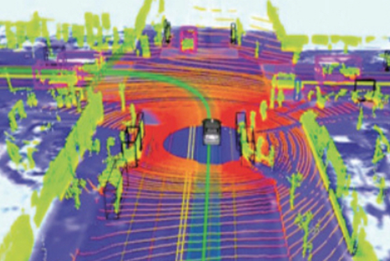

XDCLOUD
디지털트윈, 공간정보
클라우드 서비스
· 비 전문가도 소유하고 있는
데이터를 지도를 기반으로 시각화 할 수 있는 도구
· 간편하게 인터넷 및 모바일
서비스를 개발
· 실 세계와 동일한 3차원
기반 지도 배경 서비스 지원
· 고해상도 전국 지형, 영상,
3차원 건물 데이터 기반 배경 기본 적용

XD Builder Cloud
클라우드 기반으로 공간정보를 가공하여 공간정보서비스를 출판하거나 공간 분석을 할 수 있는 서비스
#공간정보
#클라우드
#도시경관
#단지경관
#빅데이터시각화
#사용자자료시각화

특징 Features
-
SNS 연결SNS 연결
지도 공유와 SNS 연결
-
커뮤니티 지원커뮤니티 지원
사용자 계정서비스와 커뮤니티 지원
-
빅데이터 시각화빅데이터 시각화
다양한 분석과 통계, 빅데이터의 시각화
기능 Functions
- 클라우드 서비스 기반의 공간정보 가공, 가시화 및 분석
- 사용자 생성 지도 개인화 서비스(전용 뷰어 제공), 공유, 퍼블리싱 지원
- 클라우드 분산 처리를 활용한 대용량 공간정보 데이터
- 지형, 영상, 시설물 데이터 등 가공
- 정부 3.0 공개 데이터, 통계 정보 시각화, 공유, 퍼블리싱 지원
- ERDAS, Imagine IMG, Geo TIFF, ECW, 3DS, OGC CityGML, KMZ, KML, GML, GeoJSON, CSV 등
- 다양한 공간정보 포맷 지원